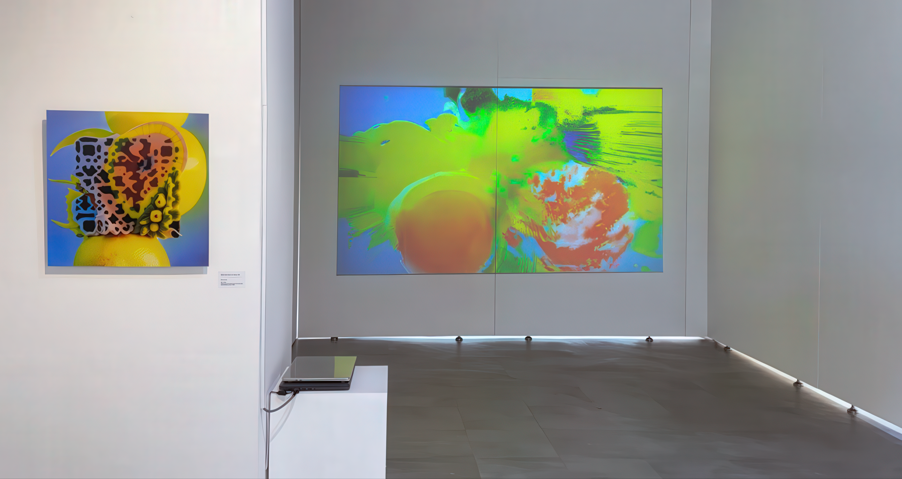
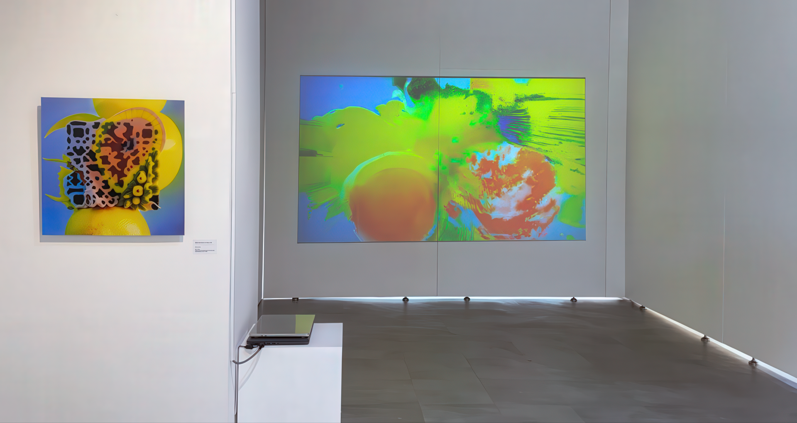

Scan to taste series
installation
2025, Diasec-mounted digital pigment print,
Single-channel color video with sound
in Gangdong Art Center, Seoul
from August, 14, 2025, to September, 4, 2025
Scan to Taste Series is a digital media installation that explores new sensory experiences in the digital age through the familiar subject of 'lemon'. In contemporary society, we often fall into the illusion of 'experiencing' taste and smell through visual images alone without direct contact, and this work artistically realizes the point where the boundaries between sensation, reality, and simulation become blurred. Viewers access video-based sensory simulations by scanning image portals embedded with QR codes, experiencing a new form of 'taste' that combines visual language, digital data, and brain memory rather than physical experience.
The exhibition consists of a dual structure: a single offline installation and a 15-piece series released through Instagram @d0idoi. This work addresses the 'disembodiment' of sensation as its core theme, presenting the possibility of new sensory experiences through 'connection' beyond traditional body-centered sensory perception. It serves as an aesthetic experimental field where viewers can directly experience post-embodiment in the digital age through interactions between audience, machine, and image.
《Scan to Taste Series》는 '레몬'이라는 익숙한 대상을 통해 디지털 시대의 새로운 감각 경험을 탐구하는 디지털 미디어 설치 작업입니다. 현대 사회에서 우리는 직접적인 접촉 없이도 시각적 이미지만으로 맛과 냄새를 '경험'하는 듯한 착각에 빠지는데, 이 작품은 바로 그 감각과 실재, 시뮬레이션의 경계가 흐려진 지점을 예술적으로 구현합니다. 관객은 QR 코드가 삽입된 이미지 포털을 스캔하여 영상 기반 감각 시뮬레이션에 접속하게 되며, 이 과정에서 물리적 체험이 아닌 시각 언어와 디지털 데이터, 그리고 뇌의 기억이 결합된 새로운 형태의 '맛' 경험을 하게 됩니다.
전시는 오프라인의 단일 설치 작품과 인스타그램 @d0idoi를 통한 15점 시리즈 공개라는 이중적 구조로 구성되어 있습니다. 이 작품은 감각의 '탈신체화'를 핵심 주제로 다루며, 전통적인 신체 중심의 감각 인식을 넘어서 '접속(connection)'을 통한 새로운 감각 경험의 가능성을 제시합니다. 관객과 기계, 이미지 간의 상호작용을 통해 디지털 시대의 포스트 신체성을 직접 체험할 수 있는 미학적 실험의 장입니다.
 


Scan to Taste